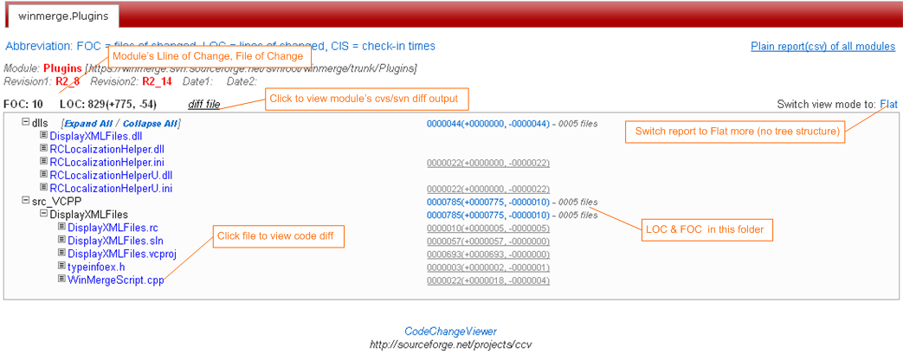

6.1. Report Based on cvs/svn Log

6.2. Report Based on cvs/svn Diff

6.3. Report Cased on Module Source File Stat./Analyse
. Get cvs/svn modules LOC, FOC on special branch or between two revisions . Get user/module summary info of more modules . Get module source file details composition info . Can browse code diff from report . View check-in comments & check-in times in report . Generate HTML/Plian/Graph report . Support 3 type reports, one base on cvs/svn log, one base on cvs/svn diff, and one base on cvs/svn module source files . Support file ext-name and path include & exclude filter . Can be web service or script utility, and easy to use
Server side dependence:
- linux/unix-like os
all POSIX (linux/BSD/unix-like OSes)
- apache
it server does not include it, pls install it
- perl
it is a standard package in almost all linux distributions.
If you can run "perl" commnad, then it is OK,
and"perl -v" command will show perl version.
- cvs
almost all linux distributions include it.
if you linux server can run "cvs" command, then OK
- svn
almost all linux distributions include it.
if you linux server can run "svn" command, then OK. if not, please install it first.
Make sure - svn supports https protocol if you need to stat. svn repositories which use https.
Supported browser:
- Firefox
- Chrome
- IE7+
- Safari
- Opera
1. get CodeChangeViewer package "ccv-2.0-%mmddyyyy%.tar.gz" from http://sourceforge.net/projects/ccv/ 2. logon on the linux server which you want to install CodeChangeViewer on it, and switch to root. 3. tar -xzvf ccv-2.0-%mmddyyyy%.tar.gz following files will be extracted |--INSTALL.pl |--ccv.tar.gz |--README 4. perl INSTALL.pl --apache-conf=/%apache.configure.file.path%/httpd.conf --prefix=/%install.CCV.in.directory%/ prefix default is "/usr/local/" Example: perl INSTALL.pl --apache-conf=/usr/local/apache2/conf/httpd.conf --prefix=/usr/local/ In this case, CodeChangeViewer install location is /usr/local/ccv 5. restart apache Example: /usr/local/apache2/bin/apachectl restart CodeChangeViewer url will be: http://ip/ccv/ccv.html
1. extract ccv.tar.gz to "--prefix"
2. modify httpd.conf to add CodeChangeViewer ScriptAlias include setting.
Example:
include /usr/local/ccv/config/ccv.script.alias.httpd
file "ccv.script.alias.httpd" generated base on apache's configure and arguments to INSTALL.pl
3. change files privilege property
4. ln -s /usr/local/ccv/web /%apache.DocumentRoot%/ccv
Before do upgrade, pls make sure your linux server can access inernet (sourceforge.net) 1. login on CodeChangeViewer server with root account. 2. go to CodeChangeViewer installed location (Example: /usr/local/ccv) 3. run "./UPDATE.sh"
1. login on CodeChangeViewer server with root account. 2. go to CodeChangeViewer installed location Example: cd /usr/local/ccv 3. run "perl UNINSTALL.pl" or "perl INSTALL.pl -U"
All CodeChangeViewer cvs/svn module configure files locate at "/CodeChangeViewer/InstalledPath/config" Example: /usr/local/ccv/config There are 3 methods to maintain repository modules configure file. a). Add/edit/delete repositoy modules configure file online through CodeChangeViewer main UI add/edit/delete button b). Manually put/edit/delete repository modules configure file in CodeChangeViewer server "/CodeChangeViewer/InstalledPath/config" directory c). Edit configure file local then upload it to server through CodeChangeViewer main UI When add, edit, delete or upload a configure file, you need to provide a password to protect your configure file. This password can protect your file written by other. You can update/delete this configure file with this password.
<configs> <!-- cvs co :pserver@serverAddress/repositoryPath modulePath --> <module> <id>moduleId1</id> <type>cvs</type> <access_mode>pserver</access_mode> <module>modulePath</module> <server>serverAddress</server> <repository>/repositoryPath</repository> <account_id>AcountId</account_id> <account_pw>password</account_pw> </module> <!-- svn co https://serverAddress/repositoryPath/trunk/modulePath --> <!-- svn co https://serverAddress/repositoryPath/branches/modulePath --> <!-- svn co https://serverAddress/repositoryPath/tags/modulePath --> <module> <id>moduleId2</id> <type>svn</type> <access_mode>https</access_mode> <module>modulePath</module> <server>serverAddress</server> <repository>/repositoryPath</repository> <account_id>AcountId</account_id> <account_pw>password</account_pw> <trunk_directory>/repositoryPath/trunk</trunk_directory> <branch_directory>/repositoryPath/branches</branch_directory> <tag_directory>/repositoryPath/tags</tag_directory> </module> <!-- svn co svn://serverAddress/repositoryPath/trunk/modulePath --> <!-- svn co svn://serverAddress/repositoryPath/branches/modulePath --> <!-- svn co svn://serverAddress/repositoryPath/tags/modulePath --> <module> <id>moduleId3</id> <type>svn</type> <access_mode>svn</access_mode> <module>modulePath</module> <server>serverAddress</server> <repository>/repositoryPath</repository> <account_id>AcountId</account_id> <account_pw>password</account_pw> <trunk_directory>/repositoryPath/trunk</trunk_directory> <branch_directory>/repositoryPath/branches</branch_directory> <tag_directory>/repositoryPath/tags</tag_directory> </module> </configs>
<configs> <!-- cvs co :pserver@winscp.cvs.sourceforge.net/cvsroot/winscp winscp3 --> <module> <id>winscp.winscp3</id> <type>cvs</type> <access_mode>pserver</access_mode> <module>winscp3</module> <server>winscp.cvs.sourceforge.net</server> <repository>/cvsroot/winscp</repository> <account_id>anonymous</account_id> <account_pw></account_pw> </module> <!-- svn co https://winmerge.svn.sourceforge.net/svnroot/winmerge/trunk/Plugins --> <!-- svn co https://winmerge.svn.sourceforge.net/svnroot/winmerge/branches/Plugins --> <!-- svn co https://winmerge.svn.sourceforge.net/svnroot/winmerge/tags/Plugins --> <module> <id>winmerge.Plugins</id> <type>svn</type> <access_mode>https</access_mode> <module>Plugins</module> <server>winmerge.svn.sourceforge.net</server> <repository>/svnroot/winmerge</repository> <trunk_directory>/svnroot/winmerge/trunk</trunk_directory> <branch_directory>/svnroot/winmerge/branches</branch_directory> <tag_directory>/svnroot/winmerge/tags</tag_directory> <account_id>anonymous</account_id> <account_pw></account_pw> </module> <!-- cvs co :pserver@filezilla.cvs.sourceforge.net/cvsroot/filezilla FileZilla --> <module> <id>filezilla.FileZilla</id> <type>cvs</type> <access_mode>pserver</access_mode> <module>FileZilla</module> <server>filezilla.cvs.sourceforge.net</server> <repository>/cvsroot/filezilla</repository> <account_id>anonymous</account_id> <account_pw></account_pw> </module> <!-- cvs co :pserver@winscp.cvs.sourceforge.net/cvsroot/winscp . --> <module> <id>winscp.all</id> <type>cvs</type> <access_mode>pserver</access_mode> <module>*</module> <server>winscp.cvs.sourceforge.net</server> <repository>/cvsroot/winscp</repository> <account_id>anonymous</account_id> <account_pw></account_pw> </module> <!-- svn co https://winmerge.svn.sourceforge.net/svnroot/winmerge/trunk --> <!-- svn co https://winmerge.svn.sourceforge.net/svnroot/winmerge/branches --> <!-- svn co https://winmerge.svn.sourceforge.net/svnroot/winmerge/tags --> <module> <id>winmerge.all</id> <type>svn</type> <access_mode>https</access_mode> <module>*</module> <server>winmerge.svn.sourceforge.net</server> <repository>/svnroot/winmerge</repository> <trunk_directory>/svnroot/winmerge/trunk</trunk_directory> <branch_directory>/svnroot/winmerge/branches</branch_directory> <tag_directory>/svnroot/winmerge/tags</tag_directory> <account_id>anonymous</account_id> <account_pw></account_pw> </module> <!-- cvs co :pserver@filezilla.cvs.sourceforge.net/cvsroot/filezilla . --> <module> <id>FileZilla.All</id> <type>cvs</type> <access_mode>pserver</access_mode> <module>*</module> <server>filezilla.cvs.sourceforge.net</server> <repository>/cvsroot/filezilla</repository> <account_id>anonymous</account_id> <account_pw></account_pw> </module> </configs>
cvs -d:pserver:userA:pass@winscp.cvs.sourceforge.net:/cvsroot/winscp co winscp3 Base above cvs command line, this module inforamtion should be as following: ... <module> <id>winscp.winscp3</id> <type>cvs</type> <access_mode>pserver</access_mode> <module>winscp3</module> <server>winscp.cvs.sourceforge.net</server> <repository>/cvsroot/winscp</repository> <account_id>userA</account_id> <account_pw>pass</account_pw> </module> ... For "id", you can identify it with "winscp.winscp3", or "winscp3", or "anystring" which be consistented with following character [0-9] [a-zA-Z] [-\._]
cvs -d:pserver:userA:pass@winscp.cvs.sourceforge.net:/cvsroot/winscp co . Base above cvs command line, this module inforamtion should be as following: ... <module> <id>winscp.all</id> <type>cvs</type> <access_mode>pserver</access_mode> <module>*</module> // Set module as * if want to stat all modules in repository <server>winscp.cvs.sourceforge.net</server> <repository>/cvsroot/winscp</repository> <account_id>userA</account_id> <account_pw>pass</account_pw> </module> ...
svn --username userA --password pass co https://winmerge.svn.sourceforge.net/svnroot/winmerge/trunk/Plugins svn --username userA --password pass co https://winmerge.svn.sourceforge.net/svnroot/winmerge/branches/Plugins svn --username userA --password pass co https://winmerge.svn.sourceforge.net/svnroot/winmerge/tags/Plugins Base above svn command line, this module inforamtion should be as following: ... <module> <id>winmerge.Plugins</id> <type>svn</type> <access_mode>https</access_mode> <module>Plugins</module> <server>winmerge.svn.sourceforge.net</server> <repository>/svnroot/winmerge</repository> <trunk_directory>/svnroot/winmerge/trunk</trunk_directory> <branch_directory>/svnroot/winmerge/branches</branch_directory> <tag_directory>/svnroot/winmerge/tags</tag_directory> <account_id>userA</account_id> <account_pw>pass</account_pw> </module> ...
svn --username userA --password pass co https://winmerge.svn.sourceforge.net/svnroot/winmerge/trunk svn --username userA --password pass co https://winmerge.svn.sourceforge.net/svnroot/winmerge/branches svn --username userA --password pass co https://winmerge.svn.sourceforge.net/svnroot/winmerge/tags Base above svn command line, this module inforamtion should be as following: ... <module> <id>winmerge.all</id> <type>svn</type> <access_mode>https</access_mode> <module>*</module> // Set module as * if want to stat all modules in repository <server>winmerge.svn.sourceforge.net</server> <repository>/svnroot/winmerge</repository> <trunk_directory>/svnroot/winmerge/trunk</trunk_directory> <branch_directory>/svnroot/winmerge/branches</branch_directory> <tag_directory>/svnroot/winmerge/tags</tag_directory> <account_id>userA</account_id> <account_pw>pass</account_pw> </module> ...
| <id/> |
required
An unique name(in one .xml configure file) which to identify module used by CodeChangeViewer.
It should be consistented with following character [0-9] [a-zA-Z] [-_\.]
id can not include following character "/", "\", "[", "]", "{", "}", " " and so on.
|
| <type/> |
required
Flag to indicate module is cvs or svn repository, can be "cvs" or "svn".
|
|
<module/> <server/> <repository/> |
required
module: module pathSet module as * if want to stat all modules in repository server: repository server ip or domain name repository: repository path Example: cvs module cvs -d:pserver:sun:pass@winscp.cvs.sourceforge.net:/cvsroot/winscp co winscp3 <repository/> is "/cvsroot/winscp" <module/> is "winscp3" <server/> is "winscp.cvs.sourceforge.net" svn module svn co https://winmerge.svn.sourceforge.net/svnroot/winmerge/trunk svn co https://winmerge.svn.sourceforge.net/svnroot/winmerge/branches svn co https://winmerge.svn.sourceforge.net/svnroot/winmerge/tags <repository/> is "/svnroot/winmerge" <module/> is "*" <server/> is "winmerge.svn.sourceforge.net" |
|
<account_id/> <account_pw/> |
required
acount name and password to access this repository moduleif access server using anonymous method: set account_id as "anonymous" set account_pw as "" |
|
<useRuntimeAccount/> |
optional
Flag to indicate if provide repository account name and password at runtime rather than set in configure file.Available value: true/false Default: false If "true", "account_id" and "account_pw" value will be provided by user at runtime. "account_id" and "account_pw" are needless if "useRuntimeAccount" is true. If "false", "account_id" and "account_pw" needed to be provided in configure file. This option supports global and module level setting. Module level priority is higher than global level priority. Explicit priority is higher than implicit priority. |
|
<trunk_directory/> <branch_directory/> <tag_directory/> |
Only required by svn module
trunk_directory: svn module trunk locationbranch_directory: svn module branches location tag_directory: svn module tags location Example: svn co https://winmerge.svn.sourceforge.net/svnroot/winmerge/trunk svn co https://winmerge.svn.sourceforge.net/svnroot/winmerge/branches svn co https://winmerge.svn.sourceforge.net/svnroot/winmerge/tags <trunk_directory/> is "/svnroot/winmerge/trunk" <branch_directory/> is "/svnroot/winmerge/branches" <tag_directory/> is "/svnroot/winmerge/tages" |
| <access_mode/> |
optional
Special server repository access mode/type, you should set it as your repository reality.cvs repository can be: ("pserver", "ext"), and default is "pserver". CodeChangeViewer now supports "pserver", "ext" will be support later. svn repository can be: ("svn", "http", "https", "svn+ssh"), and default is "svn". CodeChangeViewer now supports ("svn", "http", "https"), "svn+ssh" will be support later. Example: if cmd is "svn co svn://winmerge.svn.sourceforge.net/svnroot/winmerge/trunk" then access_mode should be svn if cmd is "svn co http://winmerge.svn.sourceforge.net/svnroot/winmerge/trunk" then access_mode should be http if cmd is "svn co https://winmerge.svn.sourceforge.net/svnroot/winmerge/trunk" then access_mode should be https |
| <filter/> |
optional
Define file extend name filter, default is ".*"Example: if you want to only stat. jsp, java, js, html files, then customize it as ".jsp;.java;.js;.html". And you can specify/overwite filter before "Generate Report" by setting them in "ccv options UI". |
|
<viewvc_entry/> <viewvc_repository/> |
optional
viewvc_entry:If this module server has available viewVC service, pls set it here. Default or empty value will use CodeChangeViewer diff module to browse code diff. Example: <viewvc_entry/>http://ccv.cvs.sourceforge.net/viewvc/ccv/</viewvc_entry/> viewvc_repository: For one ViewVC can support to browse module on different repository, ViewVC has a default repository when you browse module's code, if your module is not in default repository. Pls set it manually here. Pls only set <viewvc_repository> if your module is not on default viewvc cvsroot, otherwise, pls do not use/set it. Just set these two paramters when you know their usages & meaning, otherwise just not include |
| <repository_mapping/> |
optional, only cvs module use it in some corner-special case
this is for repository directory mapping in some special env,
Normal case, pls do not use/set it.
Only set it as the mapping-to path
when you know that you cvs module really uses repository directory mapping.Show case which needs this option? cvs module definition .. <cvs_module> <id>xphone2</id> <module>xphone</module> <server>cvs.example.com</server> <repository>/usr/local/cvsrep</repository> <repository_mapping>/depot/cvsrep</repository_mapping> <account_pw>pass</account_pw> <account_id>userA</account_id> </cvs_module> ... But its cvs rlog output is as following ... RCS file: /depot/cvsrep/xphone/research/java/xphone2/src/Application,v head: 1.2 branch: locks: strict access list: keyword substitution: b total revisions: 2; selected revisions: 2 description: ---------------------------- revision 1.2 date: 2010/03/15 09:27:52; author: userA; state: Exp; lines: +1 -0 add new resource to start one click throw PT. ---------------------------- revision 1.1 date: 2010/02/10 09:38:23; author: userA; state: Exp; First check in for IP phone 2.0 ====================================================== RCS file: /depot/cvsrep/xphone/research/java/xphone2/src/res/.cvsignore,v head: 1.1 branch: locks: strict access list: keyword substitution: kv total revisions: 1; selected revisions: 1 description: ---------------------------- revision 1.1 date: 2010/03/15 09:27:52; author: userA; state: Exp; add new resource to start one click throw PT. ===================================================== ... |
CodeChangeViewer API has two kinds: 1). Web API (Http Request) 2). Command Line API You can integrate CodeChangeViewer with your automation tool through invoking CodeChangeViewer API.
CodeChangeViewer Web API url is: http://ip/ccv-cgi/wapi.pl You can call CodeChangeViewer Web API to generate report by sending http post request to http://ip/ccv-cgi/wapi.pl. Exmaple: a. Get code change report on special branch, post following paramater: Simple post data: { cmd: "GENERATE", mode: "log", mids: "cvsModuleId1,svnModuleId2", cfg: "config.xml", rev: "BRANCH_27_B" } With more options: { cmd: "GENERATE", mode: "log", mids: "cvsModuleId1,svnModuleId2", cfg: "config.xml", rev: "BRANCH_27_B", date: "1/5/2010<=12/31/2010", wids: "user1,user2,user3", filter: { includeExts: ".java,.jsp", excludeExts: ".xml,.cpp", includeDirs: "dir1,dir2", excludeDirs="dir3,dir4" }, opts: { OcalcAllRevs: 0, OdfIgnoreEOL: 1, OgenGraph: 0, OnotStatDeleted: 0, OstatBin: 0, OstatBinLines: 0 } } to http://ip/ccv-cgi/wapi.pl Paramters instructions cmd: required WebAPI command name, generate WebAPI command name is "GENERATE" mode: required indicator generate which type report "log", generate report base on cvs/svn repository module log on specail branch/revison, date range, developer... "diff", generate report base on cvs/svn repository module diff between two branches/revisons "file", generate report base on cvs/svn repository module special branch/revision source files mids: required repository modules id separated by comma, module id defined in the "cfg" file cfg: required repository modules definition xml file rev: required special branch/revison date: optional special a date range default is empty, meaning stat. all changes if special a date range, then only stat. changes in specified date range wid: optional specail developer account, multi account using comma as separator default is to stat. and show all accounts information if special account, then only stat. changes in specified accounts example: "user1,user2,user3" filter: optional specify "file extend name" and directory include/exclude filter, default is include all files and directories use comma as separator if there are multi "file extend name" or "directory path" includeExts: if not empty, then only include file extend-name matched, Multi extend name using comma as separator default is empty, include all files example: ".java,.jsp,.html,.js,.css" excludeExts: if not empty, then exclude file extend-name matched, Multi extend name using comma as separator default is empty example: ".bmp,.jpg,.jpeg,.gif" includeDirs: if not empty, then only include directory matched, Multi directories using comma as separator default is empty, include all directory example: "include/path1,inlcude2/path2,include/path3" excludeDirs: if not empty, then exclude directory matched, Multi directories using comma as separator default is empty example: "exclude/path1,exlcude2/path2,exclude/path3" opts: optional, option to control reporting, default is none OcalcAllRevs: only used by cvs repository modules option which indicate to stat. cvs modules all change in a special date range no matter changes in which branch/revison, default is 0 OdfIgnoreEOL: option which indicate to ignore EOL change which execute cvs/svn diff command default is 1 OgenGraph: option which indicate to generate graph reports default is 0 OnotStatDeleted: only used by cvs repository modules option which indicate to DO NOT count file already deleted default is 0 OstatBin: only used by cvs repository modules option which indicate to also stat. binary files default is 0 OstatBinLines: only used by cvs repository modules option which indicate to also count binary file line of change default is 0
Exmaple: b.1 Get cvs module different report between two branches/revisions, post following paramater: Simple: { cmd: "GENERATE", mode: "diff", mids: "cvsModule1Id,cvsModule2Id,cvsModule3Id", cfg: "config.xml", dfAgainst: "revs", r1: "BRANCH_26_B", r2: "BRANCH_28_B", b.2 Get svn module different report between two branches/revisions, post following paramater: Simple: { cmd: "GENERATE", mode: "diff", mids: "svnModule1Id,svnModule2Id,svnModule3Id", cfg: "config.xml", dfAgainst: "revs", r1: "BRANCH_26_B", r2: "BRANCH_28_B", // rd1b, rd2b, bb are only required and used by svn module, cvs module will ignore them. rd1b: "branch", // indicate that "r1" is a branch, available value "branch", "trunk", "OnBranch", "OnTrunk" rd2b: "branch", // indicate that "r2" is a branch, available value "branch", "trunk", "OnBranch", "OnTrunk" bb: "" // this only used when "rd1b" and "rd2b" value is "OnBranch" } b.3 Get cvs module diff report between two dates, post following paramater: Simple: { cmd: "GENERATE", mode: "diff", mids: "cvsModule1Id,cvsModule2Id,cvsModule3Id", cfg: "config.xml", dfAgainst: "dates", d1: "2/10/2011", d2: "9/18/2011" } b.4 Get cvs module diff report between two dates, post following paramater: With more options: { cmd: "GENERATE", mode: "diff", mids: "svnModule1Id,svnModule2Id,svnModule3Id", cfg: "config.xml", dfAgainst: "dates", d1: "2/10/2011", d2: "9/18/2011", // rd1b, rd2b, bb are only required and used by svn module, cvs module will ignore them. rd1b: "OnBranch", // which value can be "OnBranch", "OnTrunk" rd2b: "OnBranch", // which value can be "OnBranch", "OnTrunk" bb: "B28" // if rd1b, rd2b are "OnBranch", then bb value is the branch which d1, d2 are on // if rd1b, rd2b are "OnTrunk", bb is useless } to http://ip/ccv-cgi/wapi.pl Paramters instructions mode: required "diff" indicate to generate report base two revisions/branches diff dfAgainst: required dfAgainst value can be "revs" or "dates" "revs" means that generate report between two branches/revisons, this case needs r1, r2 "dates" means that generate report between two dates, this case needs d1, d2 r1: branch/revison 1, required when dfAgainst is "revs" r2: branch/revison 2, required when dfAgainst is "revs" d1: date 1, required when dfAgainst is "dates" d2: date 2, required when dfAgainst is "dates" rd1b: Only required by svn modules parameter indicate that "r1" is "branch" or "trunk" or "OnBranch" or "OnTrunk" available value: "branch", "trunk", "OnBranch", "OnTrunk" rd1b: Only required by svn modules parameter indicate that "r1" is "branch" or "trunk" or "OnBranch" or "OnTrunk" available value: "branch", "trunk", "OnBranch", "OnTrunk" bb: Only required by svn modules this parameter only used when "rd1b" and "rd2b" value are "OnBranch" bb value is the branch which rd1b and rd2b are on.
Exmaple: Post following paramater: { cmd: "GENERATE", mode: "file", mids: "cvsModuleId1,cvsModuleId2,svnModuleId1,svnModuleId2", cfg: "config.xml", rev: "B28_B" } to http://ip/ccv-cgi/wapi.pl Paramters instructions mode "file" indicate to generate report base source files stat./analysing
Simple API command: perl capi.pl --mode="log" --cfg="config.xml" --mids="cvsModuleId1,svnModuleId1" --rev="B28" API Command with more options perl capi.pl \ --T_SNAP="2011-01-01+123456 " \ --mode="log" \ --cfg="config.xml" \ --mids="cvsModuleId1,svnModuleId1" \ --rev="B28" \ --date="1/1/2011<=12/31/2011" \ --wids="user1,user2,user3"
Simple API command: cvs modules diff between two branches perl capi.pl --mode="diff" --cfg="config.xml" --mids="cvsModuleId1,cvsModuleId1" \ --dfAgainst="revs" --r1="BRANCH" --r2="B28" cvs modules diff between two dates perl capi.pl --mode="diff" --cfg="config.xml" --mids="cvsModuleId1,cvsModuleId1" \ --dfAgainst="dates" --d1="02/08/2011" --d2="08/18/2011" svn modules diff between two branches perl capi.pl --mode="diff" --cfg="config.xml" --mids="cvsModuleId1,cvsModuleId1" \ --dfAgainst="revs" --r1="BRANCH" --r2="B28" --rd1b="branch" --rd2b="branch" --bb="" perl capi.pl --mode="diff" --cfg="config.xml" --mids="cvsModuleId1,cvsModuleId1" \ --dfAgainst="revs" --r1="BRANCH" --r2="" --rd1b="branch" --rd2b="trunk" --bb="" perl capi.pl --mode="diff" --cfg="config.xml" --mids="cvsModuleId1,cvsModuleId1" \ --dfAgainst="revs" --r1="" --r2="B28" --rd1b="trunk" --rd2b="branch" --bb="" svn modules diff between two dates perl capi.pl --mode="diff" --cfg="config.xml" --mids="cvsModuleId1,cvsModuleId1" \ --dfAgainst="dates" --d1="02/08/2011" --d2="08/18/2011" --rd1b="OnBranch" --rd2b="OnBranch" --bb="B28" perl capi.pl --mode="diff" --cfg="config.xml" --mids="cvsModuleId1,cvsModuleId1" \ --dfAgainst="dates" --d1="02/08/2011" --d2="08/18/2011" --rd1b="OnTrunk" --rd2b="OnTrunk" --bb=""
perl capi.pl --mode="file" --cfg="config.xml" --mids="cvsModuleId1,svnModuleId1" --rev="B28"
"Command Line API format" vs "Web API format" jsonData["cmd"] Only required by Web API, Command Line API does not need it. It should always be "GENERATE". jsonData["cmd"]="GENERATE" --T_SNAP vs jsonData["T_SNAP"] optional time snap string If not specified, system will automatically generate it, and set it as current snap time. ccv will make a dir named as "T_SNAP", and it will be ccv work space directory, all cvs/svn and ccv commands output file will be store in this directory. example: --T_SNAP="2012-02-20+071214" vs jsonData["T_SNAP"]="2012-02-20+071214" --T_SNAP="2010-10-01+834568" vs jsonData["T_SNAP"]="2010-10-01+834568" --cfg vs jsonData["cfg"] required specify modules configure definition xml file example: --cfg="config.xml" vs jsonData["cfg"]="config.xml" --mode vs jsonData["mode"] required specify generated report type, available value: "log", "diff", "file" "log", generate report base on cvs/svn repository module log on specail branch/revison, date range, developer... "diff", generate report base on cvs/svn repository module diff between two branches/revisons "file", generate report base on cvs/svn repository module special branch/revision source files example: --mode="log" vs jsonData["mode"]="log" --mode="diff" vs jsonData["mode"]="diff" --mode="file" vs jsonData["mode"]="file" --mids vs jsonData["mids"] required specify module ids which want to stat.(module id defined in the "cfg" file) If there are multi module id, using comma as separator if its value is "*" means that get all modules report example: --mids="mid1" vs jsonData["mids"]="mid1" --mids="mid1,mid2,mid3" vs jsonData["mids"]="mid1,mid2,mid3" --mids="*" vs jsonData["mids"]="*" --rev vs jsonData["rev"] required when mode is "log" or "file" specify revsion/branch which you want to get. Use "MAIN" as trunk branch example: --rev="branch1" vs jsonData["rev"]="branch1" --rev="MAIN" vs jsonData["rev"]="MAIN" --date vs jsonData["date"] optional when mode is "log" or "file" not needed in "diff" mode special a date range default is empty, meaning stat. all changes if special a date range, then only stat. changes in specified date range example: --date="2/1/2011<=5/1/2011" vs jsonData["date"]="2/1/2011<=5/1/2011" --date="2/1/2011<5/1/2011" vs jsonData["date"]="2/1/2011<5/1/2011" --date=">=2/1/2011" vs jsonData["date"]=">=2/1/2011" --date="<10/1/2011" vs jsonData["date"]="<10/1/2011" --wids vs jsonData["wids"] optional when mode is "log" or "file" not needed in "diff" mode specify repository account which you want to get. If there are multi account, using comma as separator. default is to stat. and show all accounts information. Empty value means to get all account info example: --wids="" vs jsonData["wids"]="" --wids="user1" vs jsonData["wids"]="user1" --wids="user1,user2,user3" vs jsonData["wids"]="user1,user2,user3" --dfAgainst vs jsonData["dfAgainst"] Only required when mode is "diff" not needed in "log" or "file" mode specify diff operation is compare two resvison/branchs or dates Available value: "revisions", "dates" example: --dfAgainst="revisions" vs jsonData["dfAgainst"]="revisions" --dfAgainst="dates" vs jsonData["dfAgainst"]="dates" --rd1b vs jsonData["rd1b"] Only required when mode is "diff" not needed in "log" or "file" mode available value: "trunk", "OnTrunk", "branch", "OnBranch" --rd2b vs jsonData["rd2b"] Only required when mode is "diff" not needed in "log" or "file" mode available value: "trunk", "OnTrunk", "branch", "OnBranch" --bb vs jsonData["bb"] Only required when mode is "diff" not needed in "log" or "file" mode if --rd1b and --rd1b are "OnBranch", --bb means --r1 and --r2 or --d1 and --d2 are on -bb branch --r1 vs jsonData["r1"] Only required when mode is "diff" and parameter --dfAgainst is "revisons" not needed in "log" or "file" mode specify revison1 which will be compare to another revison(--r2) Use "MAIN" as trunk branch example: --r1="MAIN" vs jsonData["r1"]="MAIN" --r1="branch1" vs jsonData["r1"]="branch1" --r2 vs jsonData["r2"] Only required when mode is "diff" and parameter --dfAgainst is "revisons" not needed in "log" or "file" mode specify revison2 which will be compare to another revison(--r1) Use "MAIN" as trunk branch example: --r2="MAIN" vs jsonData["r2"]="MAIN" --r2="branch2" vs jsonData["r2"]="branch2" --d1 vs jsonData["d1"] Only required when mode is "diff" and parameter --dfAgainst is "dates" not needed in "log" or "file" mode specify date1 which will be compare to another date(--d2) date format should be "YYYY-MM-DD" example: --d1="2011-01-01" vs jsonData["d1"]="2011-01-01" --d1="2011-10-10" vs jsonData["d1"]="2011-10-10" --d2 vs jsonData["d2"] Only required when mode is "diff" and parameter --dfAgainst is "dates" not needed in "log" or "file" mode specify date2 which will be compare to another date(--d1) date format should be "YYYY-MM-DD" example: --d2="2011-01-01" vs jsonData["d2"]="2011-01-01" --d2="2011-10-10" vs jsonData["d2"]="2011-10-10" filter[includeExts] filter[excludeExts] filter[includeDirs] filter[excludeExts] Optional specify "file extend name" and directory include/exclude filter, default is include all files and directories use comma as separator if there are multi "file extend name" or "directory path" --filter[includeExts] vs jsonData["filter[includeExts]"] Optional Use to specify included file extend name Using comma as multi file extend name separator if is not specified, means include all file example: --filter[includeExts]=".txt,.java,.cpp,.hpp" vs jsonData["filter[includeExts]"]=".txt,.java,.cpp,.hpp" --filter[excludeExts] vs jsonData["filter[excludeExts]"] Optional Use to specify excluded file extend name Using comma as multi file extend name separator if is not specified, means include all file example: --filter[excludeExts]=".txt,.java,.cpp,.hpp" vs jsonData["filter[excludeExts]"]=".txt,.java,.cpp,.hpp" --filter[includeDirs] vs jsonData["filter[includeDirs]"] Optional Use to specify included directory(s) Using comma as multi directories if is not specified, means include all directories example: --filter[includeExts]="a/b,c/d,e/f/g" vs jsonData["filter[includeExts]"]="a/b,c/d,e/f/g" --filter[excludeDirs] vs jsonData["filter[excludeDirs]"] Optional Use to specify excluded directory(s) Using comma as multi directories if is not specified, means include all directories example: --filter[excludeDirs]="a/b,c/d,e/f/g" vs jsonData["filter[excludeDirs]"]="a/b,c/d,e/f/g" opts[OgenGraph] opts[OcalcAllRevs] opts[OstatBin] opts[OstatBinLines] opts[OnotStatDeleted] opts[OdfIgnoreEOL] Optional opitions to control reporting, default is none --opts[OgenGraph] vs jsonData["opts[OgenGraph]"] Optional Use to specify if generate graph report available value: 0, 1 example: --opts[OgenGraph]=0 vs jsonData["opts[OgenGraph]"]=0 --opts[OgenGraph]=1 vs jsonData["opts[OgenGraph]"]=1 --opts[OcalcAllRevs] vs jsonData["opts[OcalcAllRevs]"] Optional, only work for cvs module when do "log" mode report and --rev is "MAIN" option which indicate to stat. cvs modules all change in a special date range no matter changes in which branch/revison, available value: 0, 1 example: --opts[OcalcAllRevs]=0 vs jsonData["opts[OcalcAllRevs]"]=0 --opts[OcalcAllRevs]=1 vs jsonData["opts[OcalcAllRevs]"]=1 --opts[OstatBin] vs jsonData["opts[OstatBin]"] Optional Use to specify if stat. binary files available value: 0, 1 example: --opts[OstatBin]=0 vs jsonData["opts[OstatBin]"]=0 --opts[OstatBin]=1 vs jsonData["opts[OstatBin]"]=1 --opts[OstatBinLines] vs jsonData["opts[OstatBinLines]"] Optional, only work for cvs module when do "log" mode available value: 0, 1 example: --opts[OstatBinLines]=0 vs jsonData["opts[OstatBinLines]"]=0 --opts[OstatBinLines]=1 vs jsonData["opts[OstatBinLines]"]=1 --opts[OnotStatDeleted] vs jsonData["opts[OnotStatDeleted]"] Optional, only using when --mode=="log" option which indicate to DO NOT count file already deleted available value: 0, 1 example: --opts[OnotStatDeleted]=0 vs jsonData["opts[OnotStatDeleted]"]=0 --opts[OnotStatDeleted]=1 vs jsonData["opts[OnotStatDeleted]"]=1 --opts[OdfIgnoreEOL] vs jsonData["opts[OdfIgnoreEOL]"] Optional Use to specify if ignore EOL when execute diff command available value: 0, 1 example: --opts[OdfIgnoreEOL]=0 vs jsonData["opts[OdfIgnoreEOL]"]=0 --opts[OdfIgnoreEOL]=1 vs jsonData["opts[OdfIgnoreEOL]"]=1
| Feature | statCVS | statSVN | CodeChangeViewer | Source Counter | Feature | ||
| Module onfig file maintain | × | × | √ | √ | × | Module onfig file maintain | |
| Multi modules one time | × | × | √ | √ | × | Multi modules one time | |
| As web service | × | × | √ | √ | × | As web service | |
| As application/utility | √ | √ | √ | √ | √ | As application/utility | |
| Easy using/convenience | ☆☆ | ☆☆ | ☆☆☆☆ | ☆☆☆☆ | ☆☆ | Easy using/convenience | |
| Report base on cvs/svn log | √ | √ | √ | ||||
| √ | × | File/directory amount | |||||
| Report base on cvs/svn diff | × | × | √ | √ | × | File size/line information | |
| Graph report | √ | √ | √ | √ | × | File size distribution | |
| Graph types | ☆☆☆☆ | ☆☆ | ☆☆ | √ | × | Line distribution | |
| HTML report | √ | √ | √ | ||||
| Multi-modules summary | × | × | √ | × | √ | Test unit analysis | |
| File/Path filter | √ | √ | √ | √ | √ | File/Path filter | |
| Browse code diff | × | × | √ | × | √ | Multi-lanaguage | |
| Source code files stat. | √ | √ | √ | × | √ | Files amount in dir | |